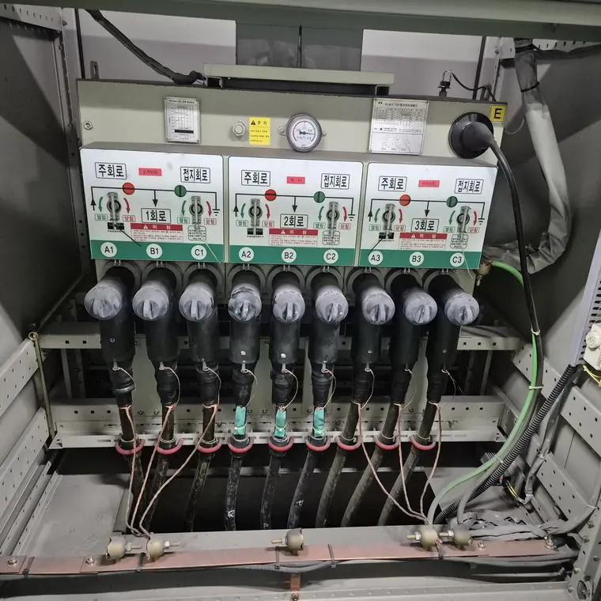
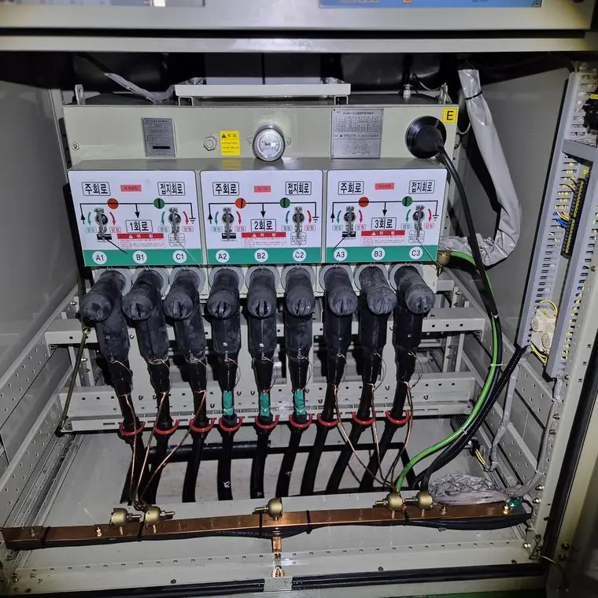

일반 청소와 절연보강 클리닝은 무엇이 다른가요?
최종 수정 2026-10-25
일반 청소는 정전 후 걸레, 에어건 등으로 표면을 닦는 방식이고, 절연보강 클리닝은 전용 세척제와 분사 장비로 내부 틈까지 세정하는 방식입니다. 아래 비교는 시공 업체가 설명하는 내용을 정리한 것입니다.
한눈에 비교
| 항목 | 일반 청소 | 절연보강 클리닝 |
|---|---|---|
| 전원 | 정전 상태에서 진행 | 활선·비활선 모두 적용(현장 확인 후) |
| 도구 | 걸레, 빗자루, 에어건, 진공청소기 | 전용 세척제와 전용 분사 장비 |
| 세정 범위 | 표면 위주, 좁은 틈은 어려움 | 내부 함체와 좁은 틈까지 분사 세정 |
| 부품 영향 | 정전기와 부품 손상 우려 | 접촉과 마찰을 줄이는 분사 방식 |
| 목표 | 눈에 보이는 먼지 제거 | 분진 제거로 설비 상태 회복 |
작업 전

작업 후

어떤 경우에 절연보강 클리닝을 검토하나요?
- 정전이 어려워 청소를 미뤄 온 설비
- 내부 틈에 먼지가 쌓여 있는 수배전반과 판넬
- 정기안전검사 전에 상태를 정리하려는 경우
주의할 점
효과와 적용 범위는 설비 종류와 오염 정도에 따라 다릅니다. 전기설비를 직접 물이나 일반 세제로 청소하는 것은 감전·단락 위험이 있어 권하지 않습니다. 반드시 전문 업체와 전기안전관리자에게 먼저 확인하세요.
자주 묻는 질문
일반 청소로는 충분하지 않나요?
표면 청소는 가능하지만 내부 좁은 틈은 어렵다고 시공 업체는 설명합니다. 설비 상태에 따라 판단하세요.
절연보강 클리닝은 모든 설비에 되나요?
설비와 현장 조건에 따라 달라집니다. 문의 후 현장 확인을 거칩니다.
설비 사진과 정보를 남기시면 확인 후 견적을 안내해 드립니다.
무료 견적 문의하기이 글은 시공 업체가 공개한 자료와 일반적인 전기설비 관리 상식을 바탕으로 작성했습니다. 설비별 적용 여부와 결과는 현장 확인 후 달라질 수 있습니다.